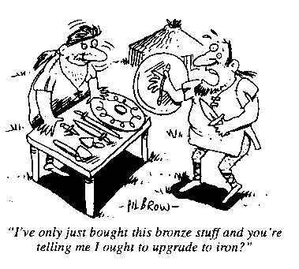

This was originally a two part article in NFB23 & 24, 1978/80.
When I recently saw Phanarzul's article on Economics (NFB22) I was interested to see his conclusions on how to revise the pitifully inadequate economic system provided in D&D. While it was an interesting article, I felt that it did not explain as fully as possible the reasons which make a Medieval economy the most realistic to use in a Fantasy or D&D style world.
Before I am drowned out by the many anguished howls from those DMs who will claim that "my world is not Medieval - so it doesn't need a medieval economy" I would like to point out that the term 'Medieval economy' does not merely refer to that which existed in Europe in the period after the fall of the Roman Empire - what it does refer to is a pre-industrial economy.
Thus if your society is pre-industrial it will have the following general characteristics: a population that is mostly involved in subsistence agriculture (85% or more), with the few Urban dwellers involved in at most handcraft level industries that rarely employ more than 2-3 workers. The general level of technology is fairly low due to a lack of a large enough leisured middle class to stimulate industry into creating technological advances.
Unless your society is reasonably close to the above structure you are moving towards the process of industrialisation that resulted in the great technological and scientific advances of the Renaissance - something D&D is not suited to fit in with.
The major limiting factor in a Medieval/pre-industrial society is the extreme fragility of the urban concentrations that provide what limited amounts of manufactured goods there are - as well as providing the basis for future developement into an industrialising society. As I have noted above, 85% or more of a county's population will be involved in more or less subsistence agriculture. In fact, some conservative estimates show that it required at least 10 farmers to support every urban dweller.
The obvious factor here is that any reduction of the number of farmers, whether by war or by plague, is going to result in a similar reduction in the number of Urban dwellers, mainly through starvation but also because of a loss of rural markets for their manufactured goods.
There were 4 major reasons for this fragility. Firstly, the initial lack of a suitable plough, which limited cultivation to thinner, less fertile lands until about 1000 AD. Secondly, the use of biennial crop rotation, which left half of all cultivable land fallow each year until the introduction of triennial rotation about 800 AD, which left only a third fallow. Thirdly, the use of oxen as draught animals rather than the twice as efficient horse, due to poor harnesses which which tended to choke a horse limiting loads to about 250lbs. In the 800's a new type of harness was introduced that increased load capacity fivefold. Finally, the very low agricultural productivity which varied between a return of 3 to 4.7 times the amount of grain sown, and from which next year,s seed had to be taken.
The limited chemical knowledge of the time meant that only the richest bullion mines could be operated. This, coupled with the fact that a token currency had not yet been thought of, meant that there was not enough gold or silver to go round. This in turn meant that frequent and massive currency debasements were neccessary to meet the growing need for currency that increasing trade and industry demanded. The problem became so bad that at one stage 'silver' shillings minted in Germany contained no silver at all. These problems naturally caused a rollercoaster ride of depressions and recoveries, as well as limiting economic development and growth. 
Two final limiting factors are also important to note. These were the shortage of iron and the uncertainty of transport in the Medieval period. Iron was in very short supply due to inefficient working methods and because deep shaft mining was impossible without powered water pumps. This meant that iron tools and utensils were rare, and were used mainly by the rich and well-to-do, with bronze items being used by the great mass of the people.
The shortage of iron also meant.that chain or scale mail was easier and cheaper to make - despite the long hours of labour involved - than full plate, which would have been incredibly expensive, even if enough iron could be found to construct it. The shortage was so acute that many ironworkers depended on scrap metal for raw materials for much of the period involved.
Since the breakdown of law and order that came with the fall of the Roman Empire the major and the safest form of transport became sea transport. Yet even this medium was not all that it could have been, as the compass had not yet been invented and thus sea travel was limited almost totally to coast hugging except for a few well known routes, mainly in the Mediterranean.
These then were the major limiting factors on the development of the Medieval world that a DM should keep in mind when developing his D&D campaign.
But what do they mean in game terms, one might well ask. Well, Chaots can no longer go around slaughtering innocent farmers, unless they wish to starve to death. Famine is a real possibility with the margin of cereal production so low. Heavy land transport will move at the slow pace of teams of oxen, and ships will be very slow also, hugging the coastline all the time. Finally, most warriors will be armed in chain or scale mail at best, unless they are incredibly wealthy (successful Dungeon adventurers maybe?).
As already indicated, the only item for which demand cannot be cut by too much is, of course, food. During the Medieval period, the major type of food consumed was cereal (wheat, corn, maize etc) with meat and fish being relatively scarce. Fortunately we can determine that the average annual consumption of cereals worked out at 300kg per person, or 1200kg for the average family of four. We also know the average number of working hours available annually, and with these two pieces of information it becomes easy to work out average wages - if we know food prices.
England 1320 160kg cereal cost 37 shillings France 1339-69 100kg of cereal cost 50 shillingsThus in England the minimum hourly wage had to be 1.75 pence. Similarly in France it would be 2.5d. In most cases of course this food would have been grown by the family themselves, or in the case of labourers in cities provided by their employers. On top of this, there would almost certainly have been a payment in cash; to the farmer this would have been in the form of extra crops for barter. Such paymerits would probably have been on a similar scale to that suggested next:
Unskilled Labourer ½d/day 3½d/week Skilled Labourer 1-2d/day 7-14d/week Skilled Craftsman 3-6d/day 14-42d/weekThis gives an average conjectural weekly wage as follows:
France England Unskilled Labourer 15¾d 21d Skilled Labourer 19-26d 24-31d Skilled Craftsman 34-54d 38-59½d
Those persons who are self-employed would have to pay for their own food as well as making a bit extra if possible out of their profits.
Of course armour was a luxury item and profits were charged accordingly. Second or third hand Armour may have cost a quarter of the new price. Other items would probably have less excessive profit margins, being from 10-50% at each step.
NB - DON'T use the times for production given by TSR or Judges Guild, as they are more the result of wishful thinking than any real knowledge of Medieval production times.
Dukes 13/4d Mounted Archers ) Welsh Vintenaries 4d Earls 6/8d Armoured Infantry )6d Foot Archers 3d Barons 4s Hobilars ) Welsh Spearmen 2d Knights 2s Vintenaries ) Constables 1s1321-1420 (England):
Horse £7 Mule £1 Cereal 2d/lb Iron 5s/kilo1339-69 (France):
5lb Twisted Candle 7/6d 2oz Medicine 1s Bronze Coffer £1/14s Flour/lb 3d Horse £20 Draught Horse £10 Ox £4 Mule £6 Donkey £5 Knife Blade 2/6d Blankets 2/6d Mail Hauberk £30 10z silk 1/3d Wine/qrt 2/6d Lance Head 2/6d Stirrups 2/6d Mirror 1s Paper/ream £3